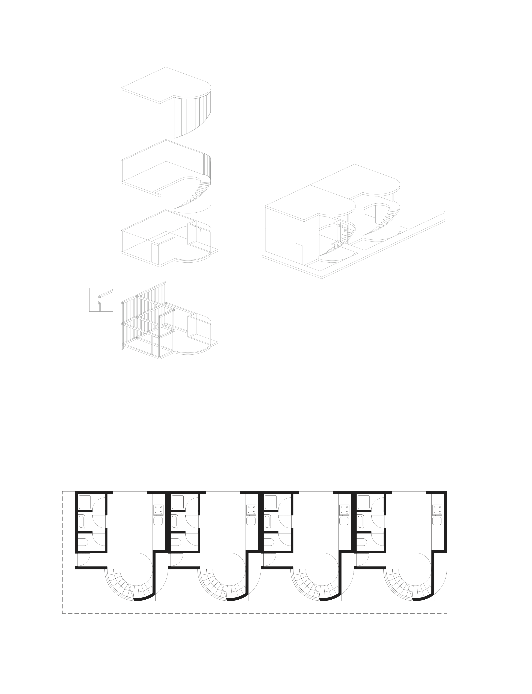
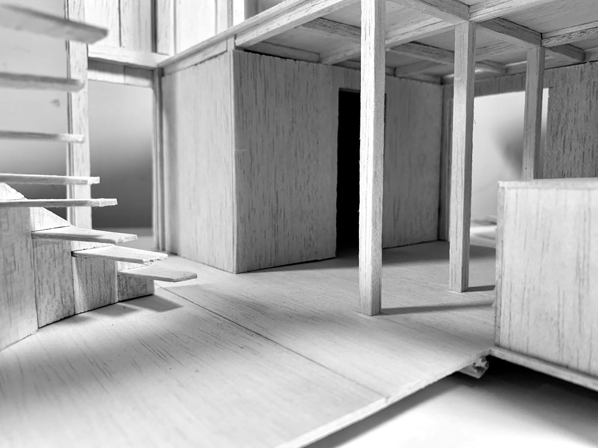
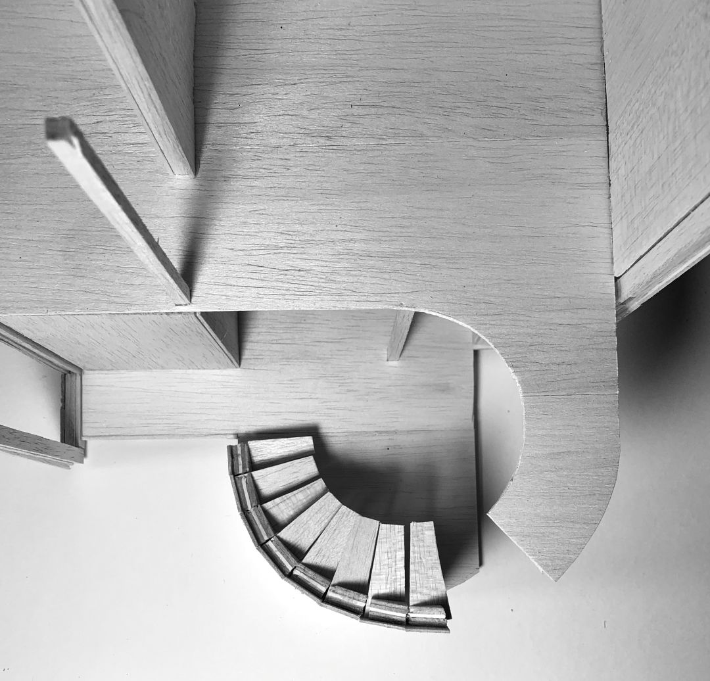
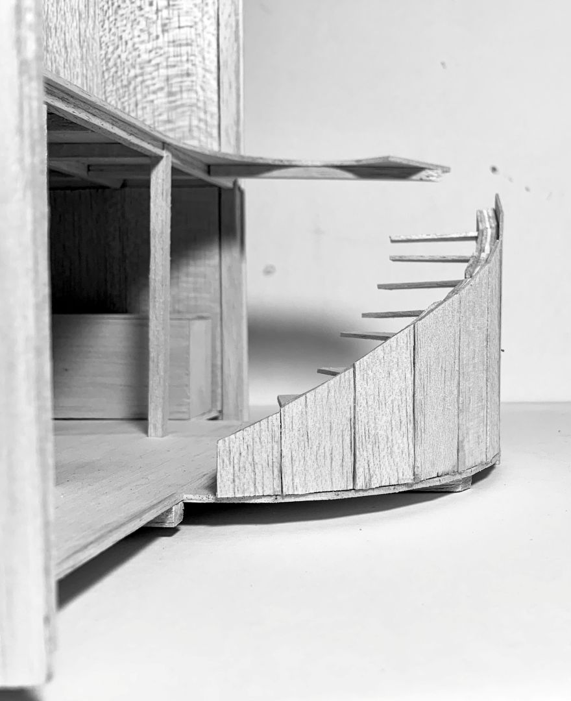

Some of my earliest memories involve building things with my hands, cardboard cities, makeshift furniture for my toys, anything I could dream up and make real. That instinct never left.
Years later, I graduated from the Lisbon School of Architecture and have since spent over 3 years immersed in the world of Architecture, Model making, and most recently, Product & Furniture Design.
CONTACTS:
+45 31832306
tasanarq@gmail.com



